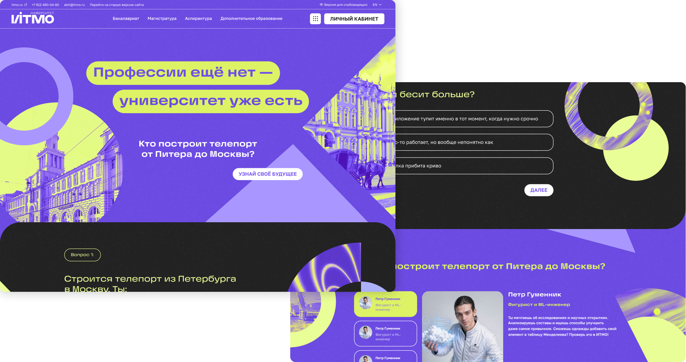

Лендинг-квиз для абитуриентов ИТМО
работа с дизайн-системой
разработка квиза HTML
геймификация
разработка Tilda
Лендинг-квиз для поступающих в университет, цель которого собрать как можно больше контактов потенциальных абитуриентов путем геймификации. Оформление финального лендинга было доработано дизайн-командой.
